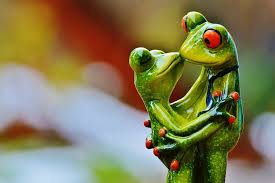
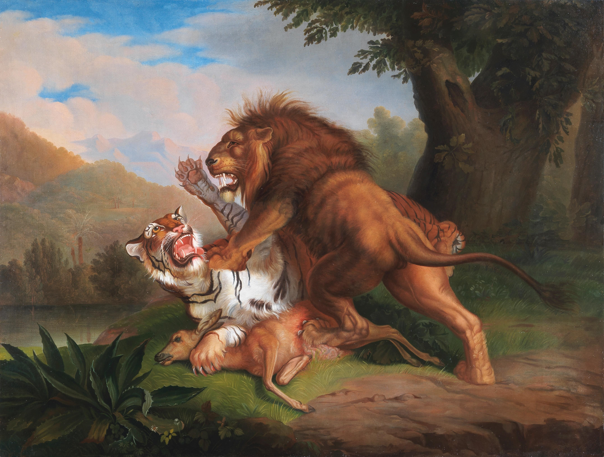

About Us
We are a professional zoological matchmaking service. We learn each animal's deepest desires in order to find the mate of their dreams. We work with domestic and international Zoos so we have many potential matches just for you. Whether endangered and looking for something serious or just looking for fun, we can help.
Frog Story
Frog Story. Sehuencas water frog, horoscope is Aquarius, location is Cochabamba, Bolivia: After 10 years of searching, Romeo the frog has found the love of his life, Juliet. On the weekends, they attend the local farmers market and play pickleball. They leased a subaru forester and moved to the subarbs -they needed a bigger yard for their tadpoles

Disclaimer
Zoo La-La prides itself in our ability to screen all our members and to give all of our members a quality dating experience! However, in the event of a bad date that results in mauling, long-term stench or general injury, Zoo-La-La cannot be held responsible.
